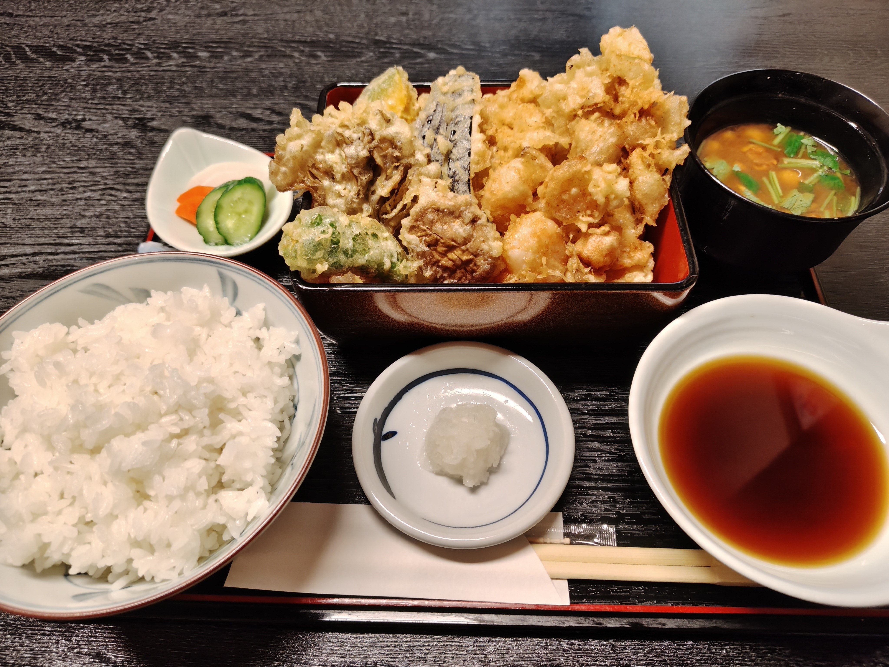
| 営業時間 | 11:30〜15:00, 17:00〜19:00（ネタを使い切り次第終了） |
|---|---|
| 定休日 | 日曜 |
| 住所 | 鳥取県鳥取市栄町725 駅前サンロード三番街ビル2F |
| 予約 | 可 — ☎ 0857-22-1668 ／ 公式サイト |
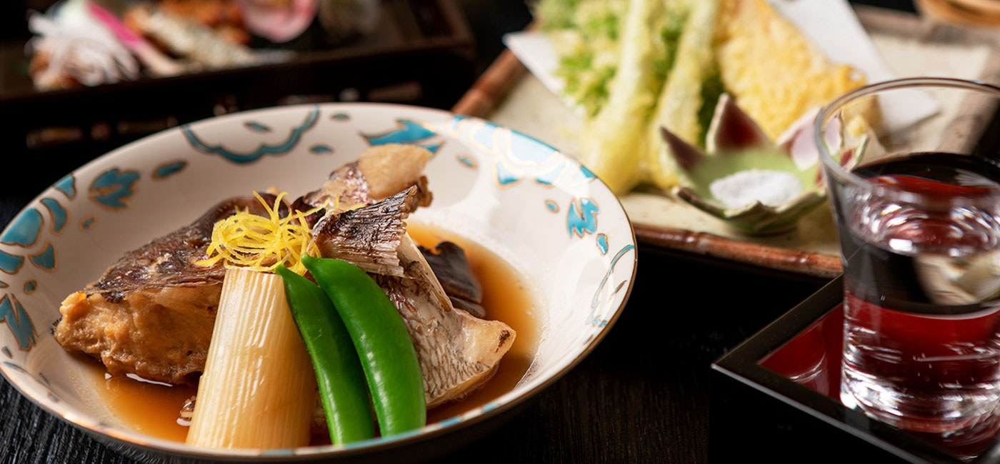
| 営業時間 | 【昼】11:30〜14:00（前日までの要予約）／【夜】月〜木 18:00〜21:00（L.O.20:30）、金・土 18:00〜22:00（L.O.21:30、当日14時までの要予約） |
|---|---|
| 定休日 | 日曜・祝日 |
| 住所 | 鳥取県鳥取市戎町463 |
| 予約 | 要 — ☎ 0857-22-4300 ／ 公式サイト |
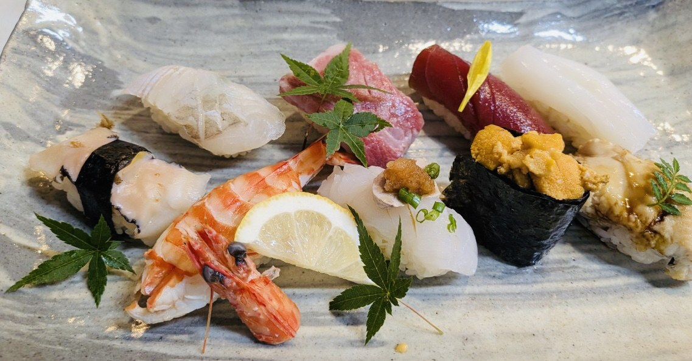
| 営業時間 | 17:30〜21:30（夜のみ営業） |
|---|---|
| 定休日 | 日曜（月曜が祝日の場合は日曜営業・月曜代休） |
| 住所 | 鳥取県鳥取市末広温泉町104 |
| 予約 | 推奨 — ☎ 0857-23-4538 ／ 公式サイト |
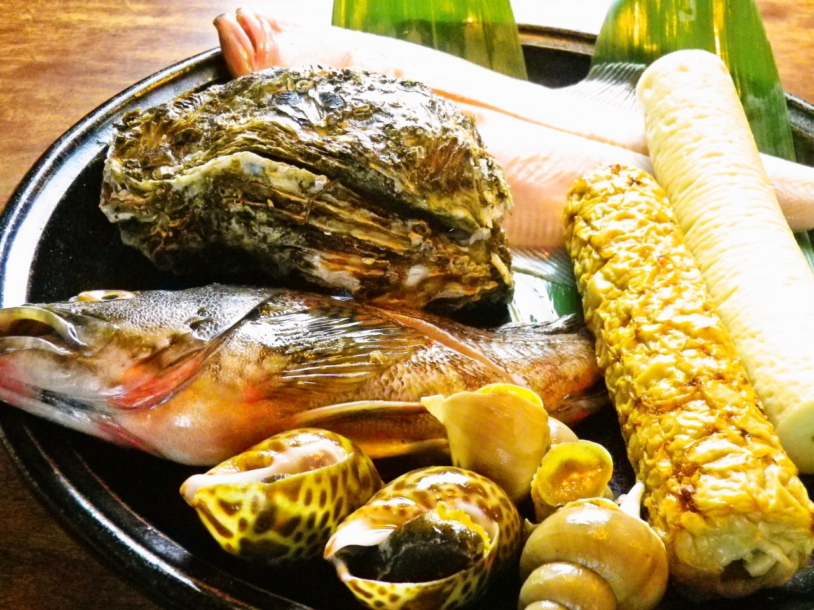
| 営業時間 | 11:30〜14:00, 17:00〜21:00（L.O.20:00） |
|---|---|
| 定休日 | 水曜・年末年始 |
| 住所 | 鳥取県鳥取市栄町652 |
| 予約 | 推奨 — ☎ 0857-26-6355 ／ 公式サイト |
| 営業時間 | 完全予約制の時間制。昼 12:00／12:30、夕 18:00／19:00 のいずれか |
|---|---|
| 定休日 | 日曜・毎週第4月曜日 |
| 住所 | 鳥取県鳥取市元魚町1丁目215 |
| 予約 | 要 — ☎ 0857-22-5383 ／ 公式サイト |
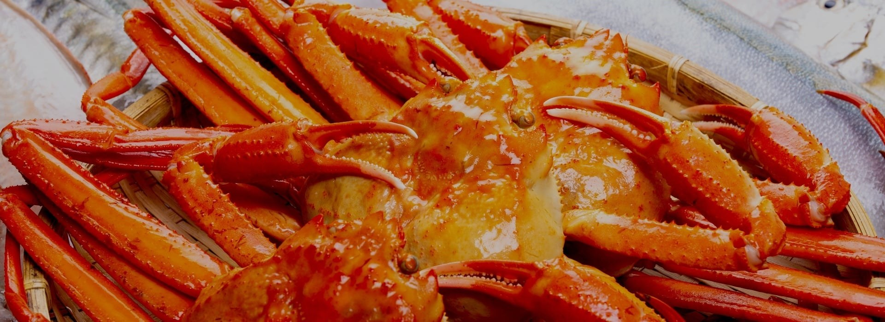
| 営業時間 | 11:00〜14:00, 17:00〜21:00（日・祝は11:00〜15:00, 16:00〜21:00。夜は前日午前中までの要予約） |
|---|---|
| 定休日 | 不明 |
| 住所 | 鳥取県鳥取市賀露町北1丁目8-12 |
| 予約 | 推奨 — ☎ 0857-31-1178 ／ 公式サイト |
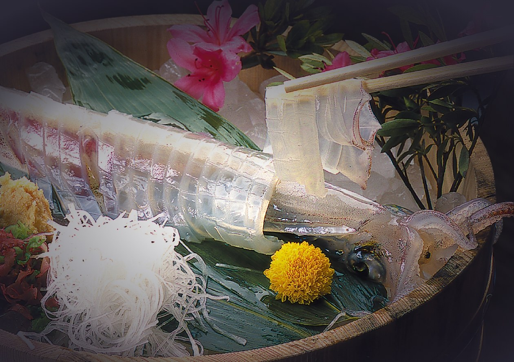
| 営業時間 | 平日 11:00〜14:00／土日祝 11:00〜14:00, 17:00〜21:00（入店受付19:45・L.O.20:00） |
|---|---|
| 定休日 | 水曜 |
| 住所 | 鳥取県鳥取市賀露町西3丁目27-1 |
| 予約 | 推奨 — ☎ 0857-31-4649 ／ 公式サイト |
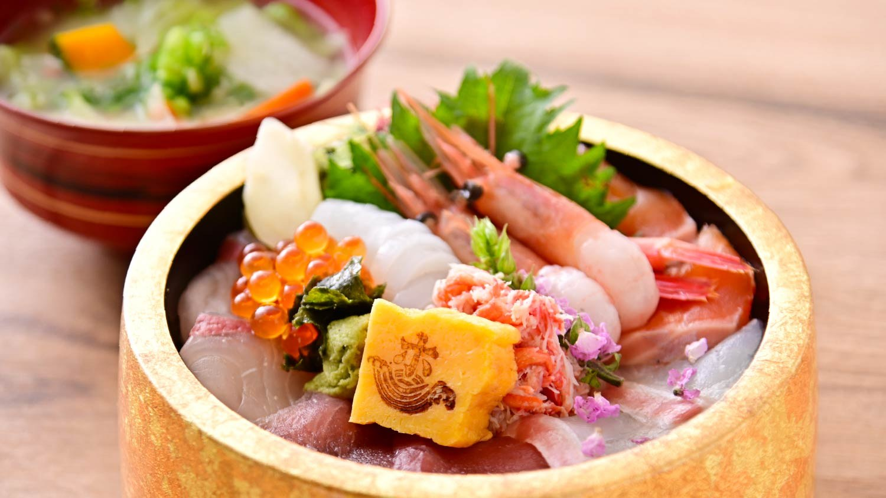
| 営業時間 | 11:00〜15:00（L.O.14:30） |
|---|---|
| 定休日 | 水曜（月2日ほど不定休あり） |
| 住所 | 鳥取県鳥取市賀露町西3-323 |
| 予約 | 可 — ☎ 0857-50-1775 ／ 公式サイト |
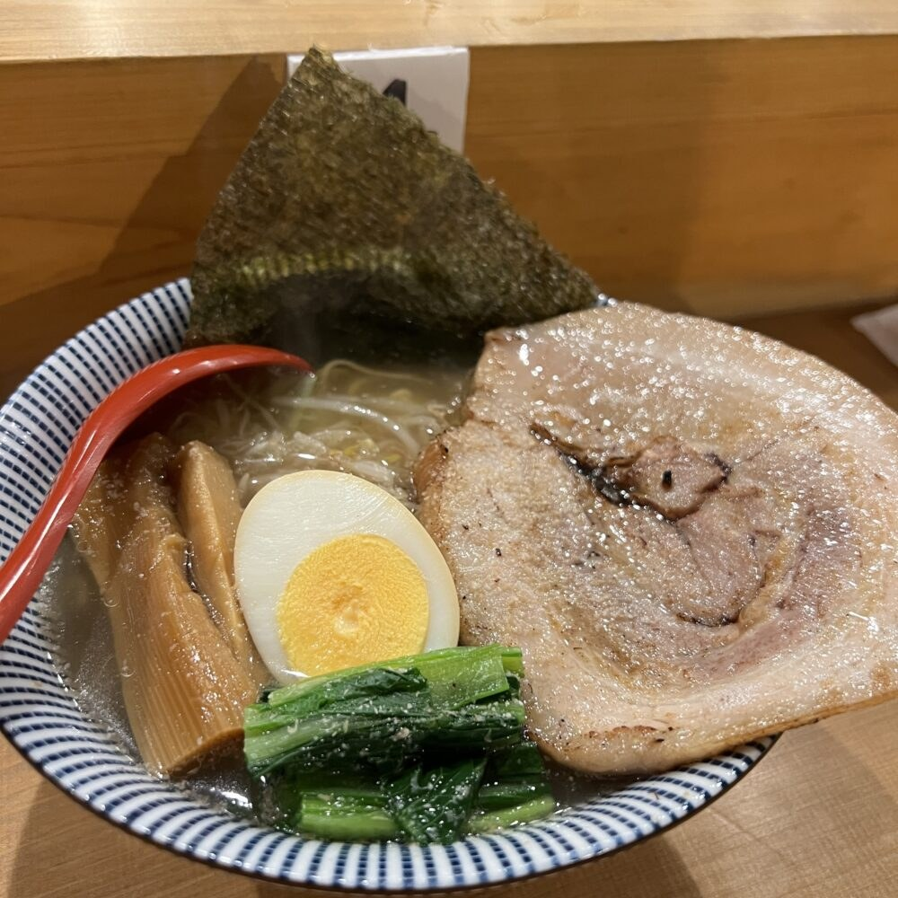
| 営業時間 | 11:00〜15:00, 17:00〜20:00（ラストオーダーは各30分前） |
|---|---|
| 定休日 | 火曜 |
| 住所 | 鳥取県鳥取市今町2丁目118 |
| 予約 | 不要 — ☎ 0857-21-1511 |
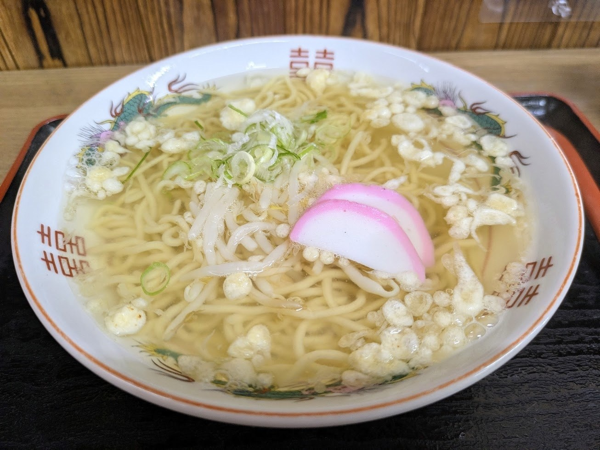
| 営業時間 | 10:30〜21:00（月曜は15:00〜） |
|---|---|
| 定休日 | 日曜・祝日（8月14〜16日、1月1〜4日も休み） |
| 住所 | 鳥取県鳥取市職人町15 |
| 予約 | 不要 — ☎ 0857-22-3397 ／ 公式サイト |
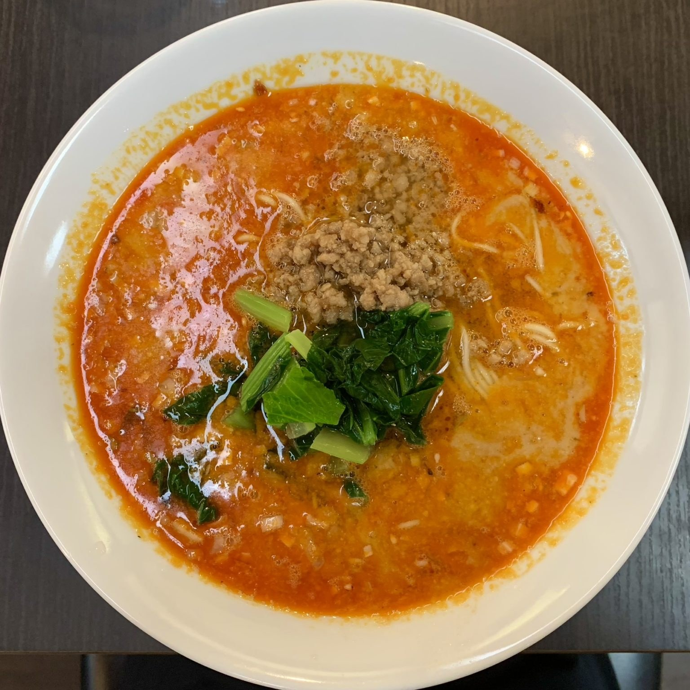
| 営業時間 | 昼 11:00〜14:30（ラストオーダー14:00）／夜 17:30〜20:30（ラストオーダー20:00・夜営業は曜日限定） |
|---|---|
| 定休日 | 水曜（水曜が祝日のときは木曜） |
| 住所 | 鳥取県鳥取市上魚町7-1 |
| 予約 | 不要 — ☎ 0857-30-6554 |
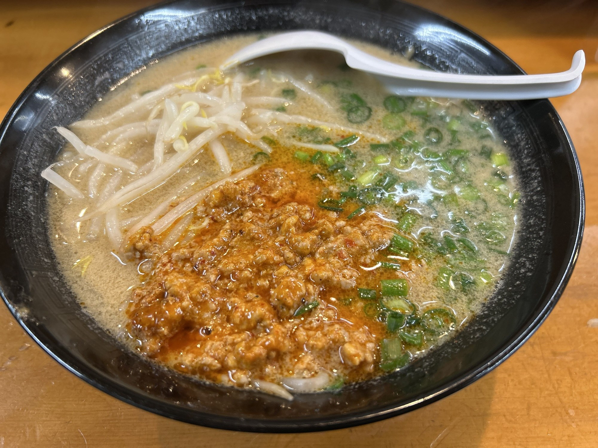
| 営業時間 | 月〜金・祝 12:00〜14:00, 19:00〜26:00／土 19:00〜26:00 |
|---|---|
| 定休日 | 日曜 |
| 住所 | 鳥取県鳥取市弥生町351 |
| 予約 | 不要 — ☎ 0857-26-6522 |
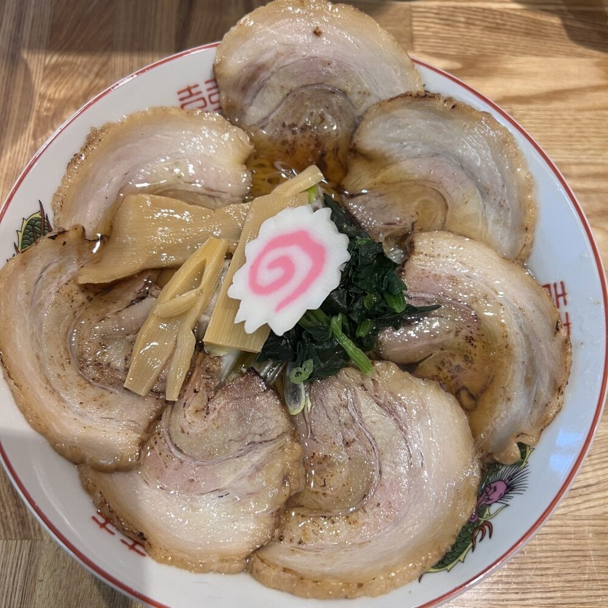
| 営業時間 | 11:00〜21:30（ラストオーダー） |
|---|---|
| 定休日 | 不定休（月曜・木曜に休むことが多い） |
| 住所 | 鳥取県鳥取市栄町721 |
| 予約 | 不要 — ☎ 080-7199-2741 |
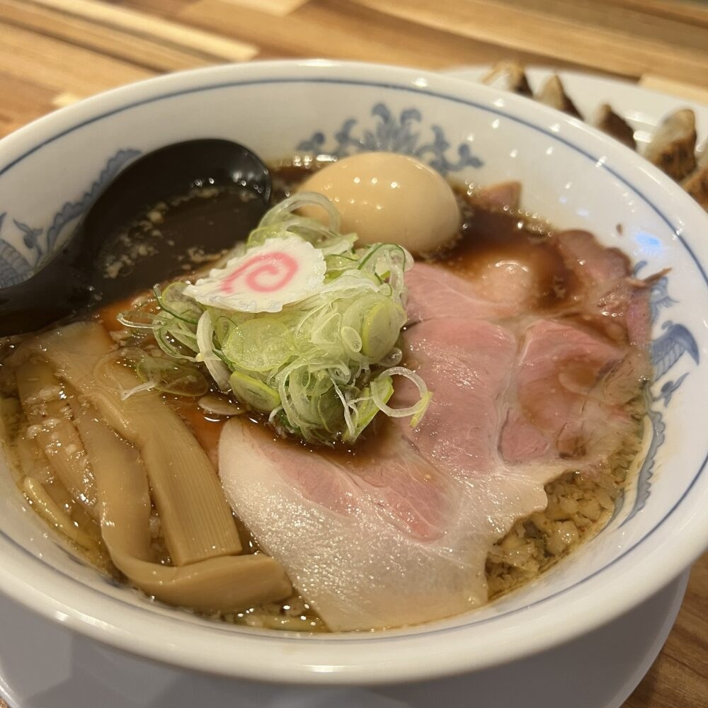
| 営業時間 | 11:00〜15:00, 17:30〜22:00（売り切れ次第終了） |
|---|---|
| 定休日 | 木曜 |
| 住所 | 鳥取県鳥取市湖山町北3丁目164 |
| 予約 | 不要 — ☎ 0857-77-3595 |
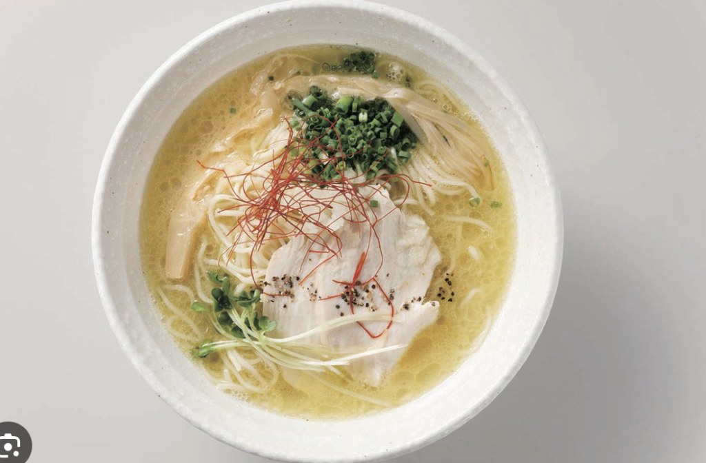
| 営業時間 | 11:00〜14:30, 17:30〜21:30 |
|---|---|
| 定休日 | なし（年中無休） |
| 住所 | 鳥取県鳥取市吉成南町1-24-2 |
| 予約 | 不要 — ☎ 0857-51-1029 ／ 公式サイト |
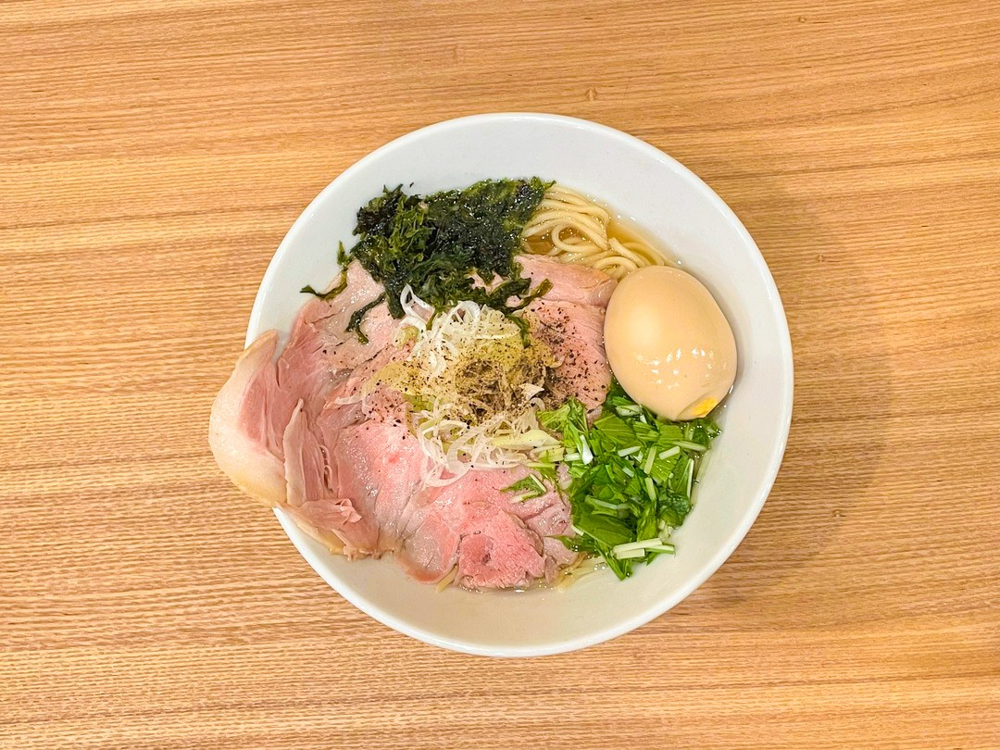
| 営業時間 | 平日 11:00〜14:00／土日祝 11:00〜15:00（スープ切れ終了） |
|---|---|
| 定休日 | 水曜 |
| 住所 | 鳥取県鳥取市福部町湯山2164-657 サンコスモス104号 |
| 予約 | 不要 |
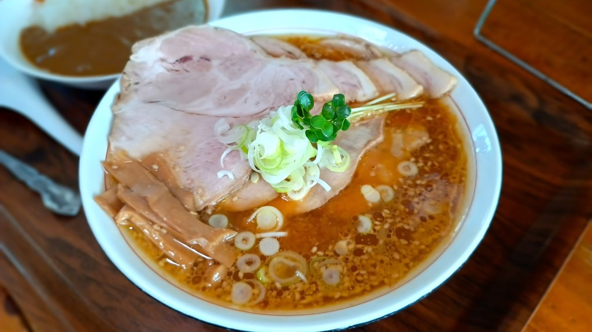
| 営業時間 | ランチ 11:30〜14:00／ディナー 18:00〜20:00（仕込んだ麺が尽きれば終了。早めの売り切れあり） |
|---|---|
| 定休日 | 日曜日の夜、月曜日 |
| 住所 | 鳥取県鳥取市正蓮寺107 |
| 予約 | 不要 — ☎ 0857-20-2340 ／ 公式サイト |
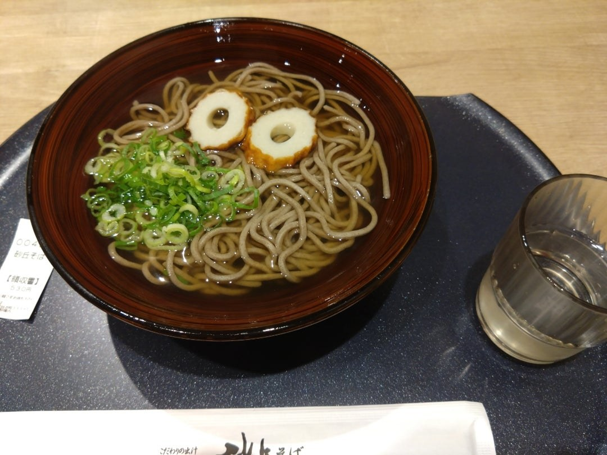
| 営業時間 | 7:00〜20:00 |
|---|---|
| 定休日 | 無休（シャミネ鳥取に準ずる） |
| 住所 | 鳥取県鳥取市東品治町111-1 シャミネ鳥取 えきなかキッチン |
| 予約 | 不可 — ☎ 080-2924-2798 ／ 公式サイト |
| 営業時間 | 11:00〜20:00（L.O.）、土・日曜、祝日は〜16:00（L.O.） |
|---|---|
| 定休日 | 水曜（祝日の場合は営業） |
| 住所 | 鳥取県鳥取市本町1丁目206 |
| 予約 | 不要 — ☎ 0857-23-0186 |
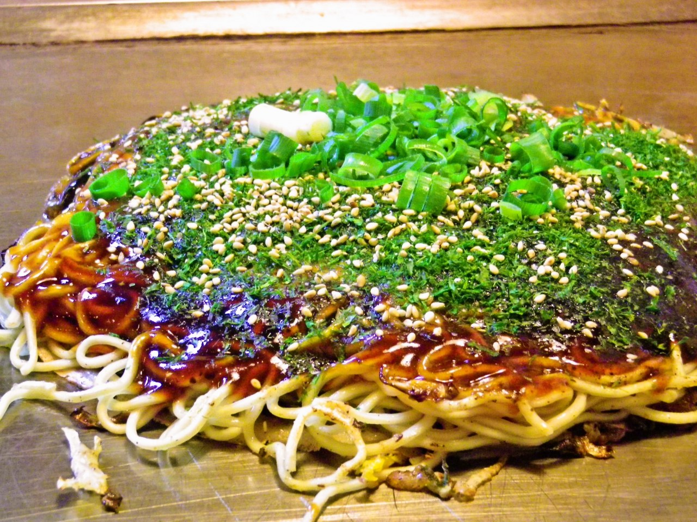
| 営業時間 | 11:30〜23:00（料理L.O. 22:30） |
|---|---|
| 定休日 | 火曜 |
| 住所 | 鳥取県鳥取市末広温泉町773 |
| 予約 | 可 |
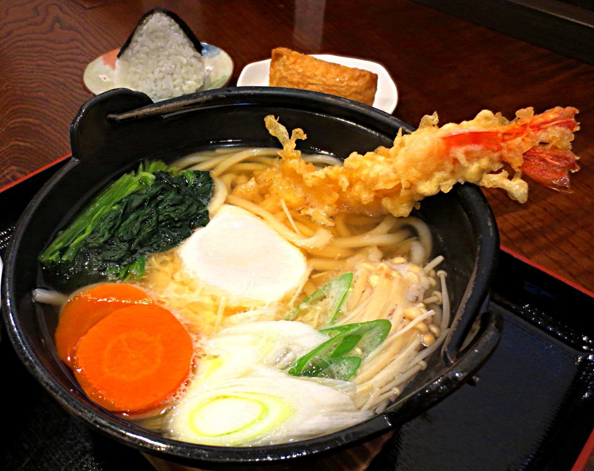
| 営業時間 | 11:00〜14:30（L.O.） |
|---|---|
| 定休日 | 火曜・祝日 |
| 住所 | 鳥取県鳥取市東町3丁目362-1 |
| 予約 | 不要 — ☎ 0857-29-4608 ／ 公式サイト |
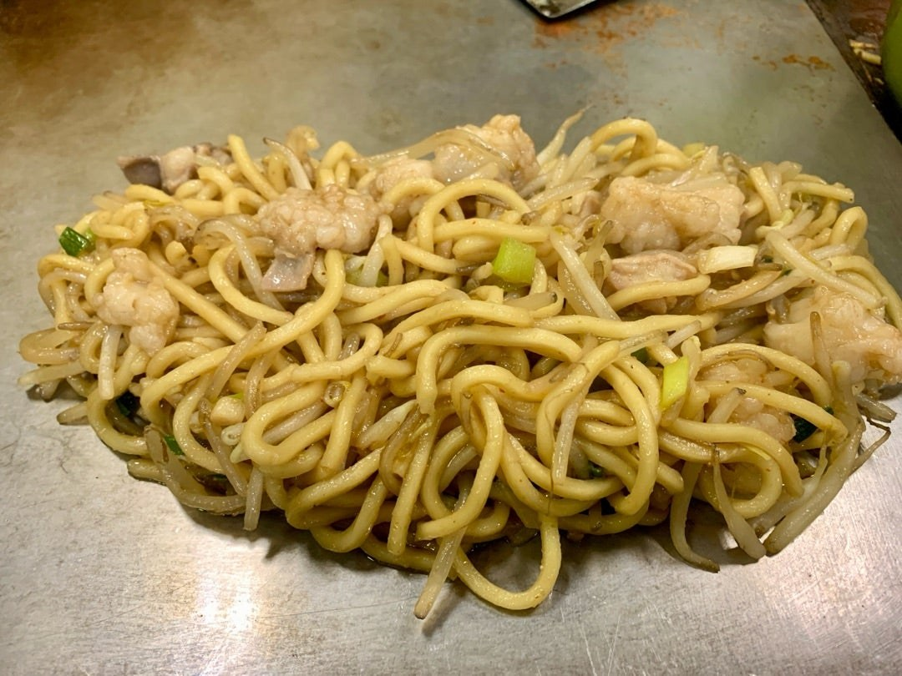
| 営業時間 | 11:30〜13:15（13:30閉店）／17:00〜21:00（火曜は夜のみ） |
|---|---|
| 定休日 | 日曜・祝日（盆・年始は休み、GWは営業） |
| 住所 | 鳥取県鳥取市吉方温泉4丁目432 |
| 予約 | 不要 — ☎ 0857-23-3050 |
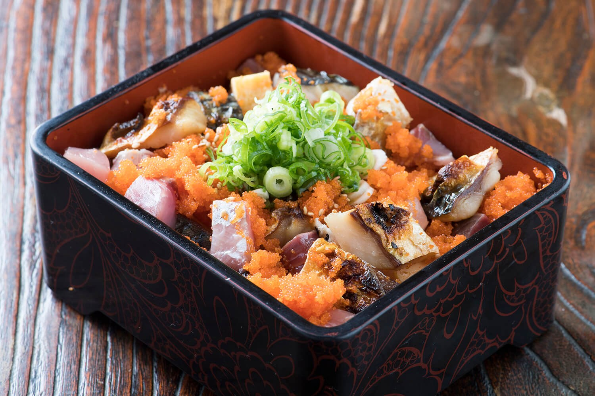
| 営業時間 | 11:30〜14:00／17:30〜21:00 |
|---|---|
| 定休日 | 火曜 |
| 住所 | 鳥取県鳥取市湖山町北5丁目245-2 |
| 予約 | 不要 — ☎ 0857-28-1708 ／ 公式サイト |
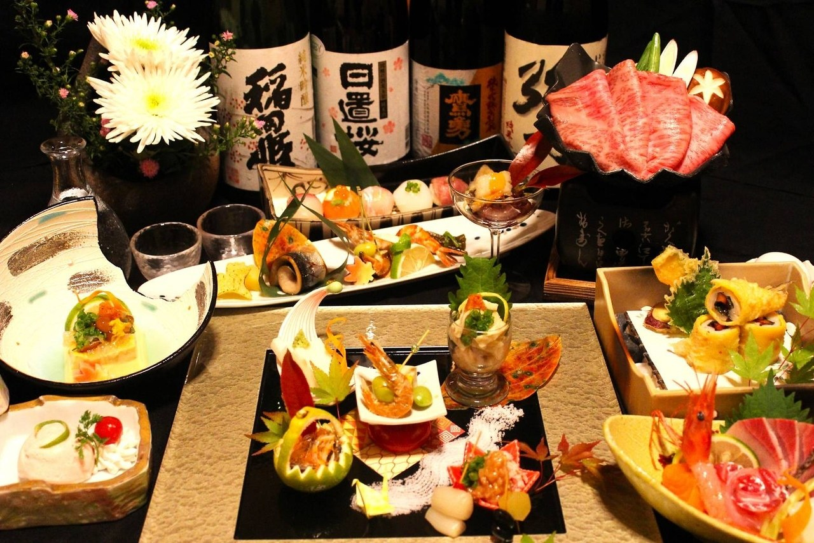
| 営業時間 | 17:30〜翌0:30（料理L.O.翌0:00／ドリンクL.O.翌0:00） |
|---|---|
| 定休日 | 日曜（翌月曜が祝日の場合は営業し、翌月曜休み） |
| 住所 | 鳥取県鳥取市末広温泉町159 |
| 予約 | 推奨 — ☎ 0857-29-0801 ／ 公式サイト |
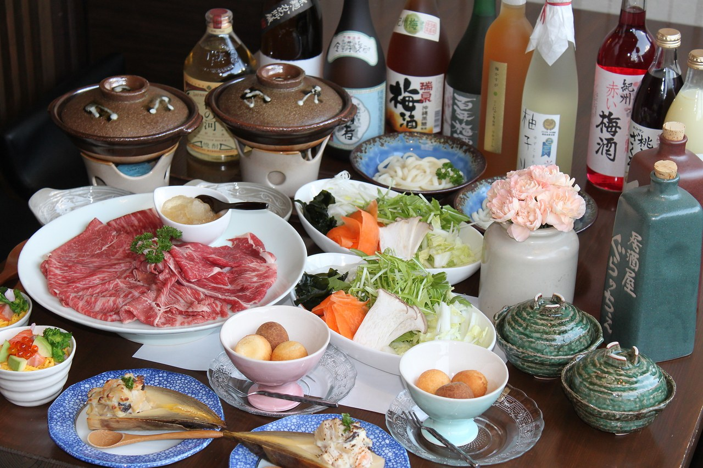
| 営業時間 | 17:00〜23:00（料理L.O.22:00／ドリンクL.O.22:00）※天候により変更あり |
|---|---|
| 定休日 | 日曜（月曜が祝日の場合は日曜営業のことあり。日曜以外にも不定休あり） |
| 住所 | 鳥取県鳥取市末広温泉町271-4 かわとビル |
| 予約 | 推奨 — ☎ 0857-29-5300 ／ 公式サイト |
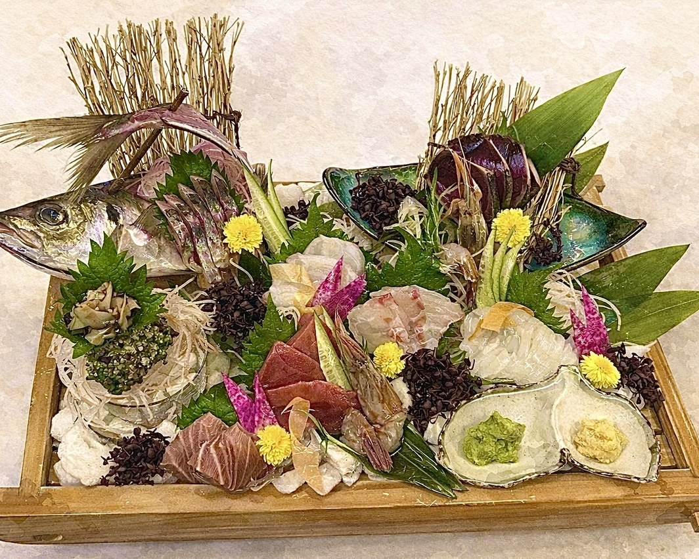
| 営業時間 | 月〜木・祝 17:30〜23:30／金・土・祝前日 17:30〜翌0:30 |
|---|---|
| 定休日 | 日曜（祝日が月曜の場合は日曜営業・月曜休み） |
| 住所 | 鳥取県鳥取市末広温泉町165 |
| 予約 | 推奨 — ☎ 0857-50-0010 ／ 公式サイト |
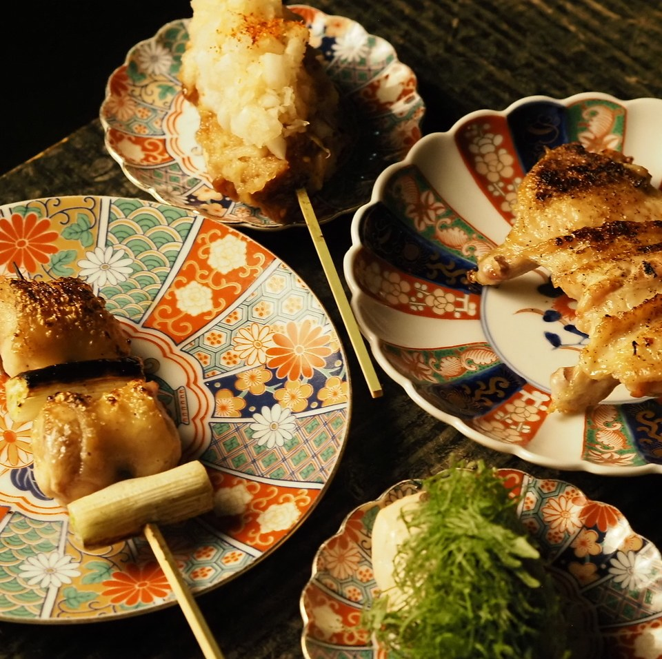
| 営業時間 | 月〜木・日・祝・祝前日 16:30〜23:30（料理L.O.22:30）／金・土 16:30〜翌3:00（料理L.O.翌2:00） |
|---|---|
| 定休日 | 不定休 |
| 住所 | 鳥取県鳥取市弥生町265 WAGONビル1階 |
| 予約 | 可 — ☎ 0857-51-1182 |
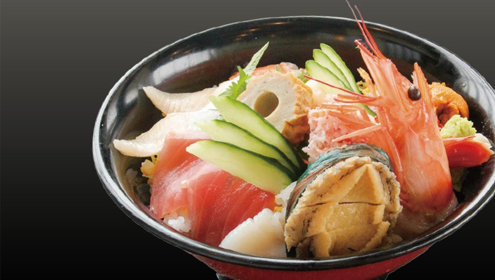
| 営業時間 | 昼 11:00〜14:00／夜 17:00〜22:00（最終入店21:00、L.O.21:30） |
|---|---|
| 定休日 | 日曜（月曜が休みの場合は日曜営業・月曜休業） |
| 住所 | 鳥取県鳥取市永楽温泉町378 |
| 予約 | 推奨 — ☎ 0857-22-1000 ／ 公式サイト |
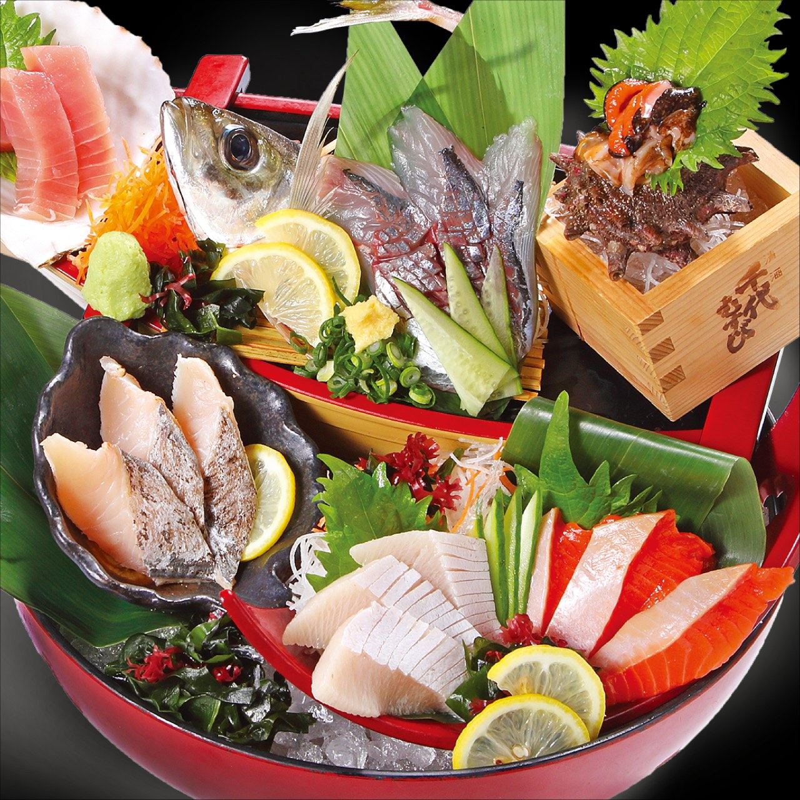
| 営業時間 | 月〜金 17:00〜24:00／土・日 17:00〜翌1:00（閉店時刻が早まる場合あり） |
|---|---|
| 定休日 | 無休 |
| 住所 | 鳥取県鳥取市栄町608 |
| 予約 | 推奨 — ☎ 0857-22-9900 ／ 公式サイト |
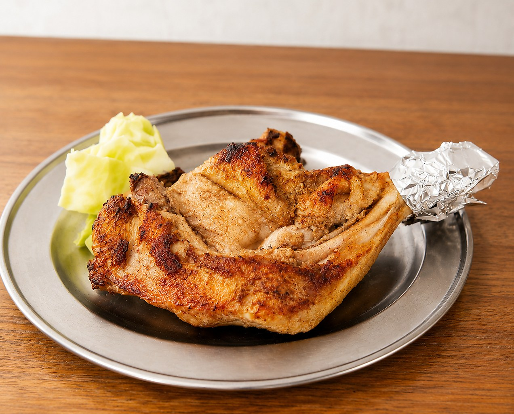
| 営業時間 | 土・日・祝 11:30〜21:00（料理L.O.21:00／最終入店20:00） |
|---|---|
| 定休日 | 月・火・水・木・金 |
| 住所 | 鳥取県鳥取市賀露町北4-33-25 |
| 予約 | 推奨 — ☎ 070-6502-8399 ／ 公式サイト |
| 営業時間 | 昼 11:00〜14:00／夜 17:00〜22:00 |
|---|---|
| 定休日 | 原則、日曜夜（月曜が祝日の場合は日曜夜営業・月曜夜休業）、年末年始。臨時休業・不定休あり |
| 住所 | 鳥取県鳥取市瓦町526 |
| 予約 | 推奨 — ☎ 0857-23-0494 ／ 公式サイト |
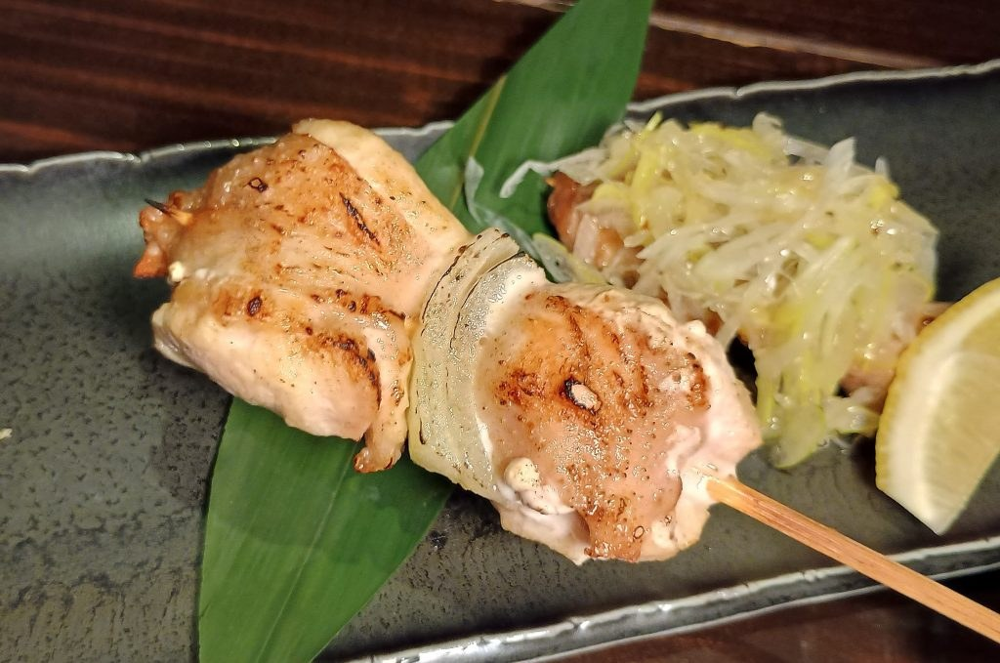
| 営業時間 | 月・火・水・木・祝日・祝後日 17:30〜23:30／金・土・祝前日 17:30〜翌0:30（ラストオーダーは各終了30分前） |
|---|---|
| 定休日 | 日曜日 |
| 住所 | 鳥取県鳥取市弥生町373-4 |
| 予約 | 推奨 — ☎ 0857-30-4194 ／ 公式サイト |
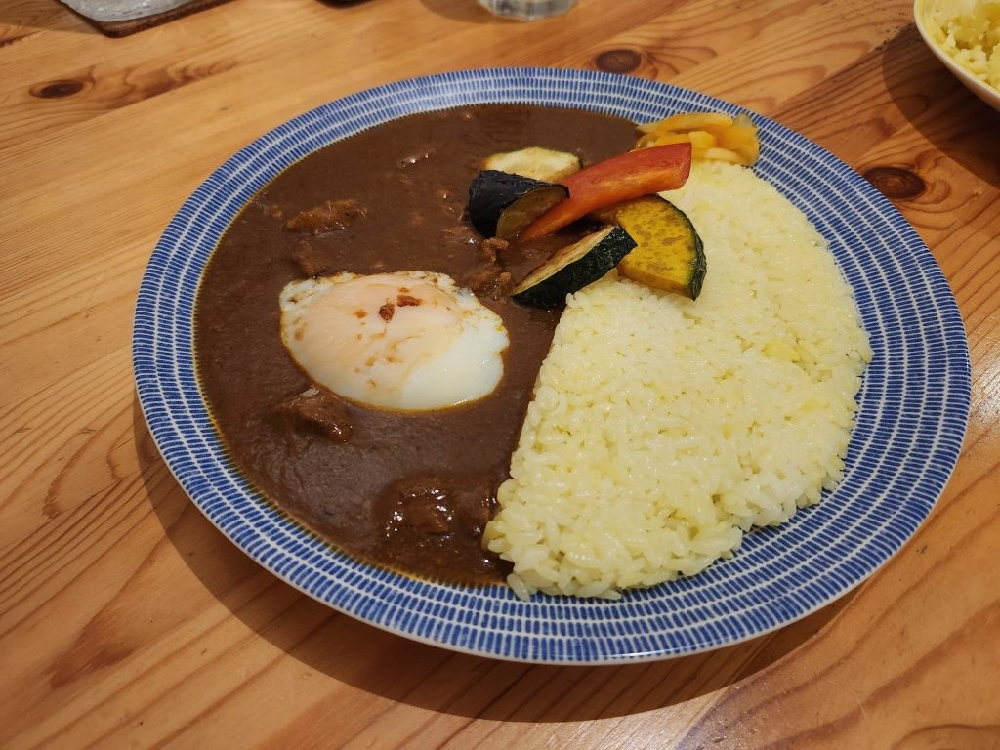
| 営業時間 | 11:30〜14:00（L.O.13:00）, 18:00〜20:00（L.O.19:40） |
|---|---|
| 定休日 | 水曜 |
| 住所 | 鳥取県鳥取市扇町134 |
| 予約 | 不明 — ☎ 0857-20-0323 |
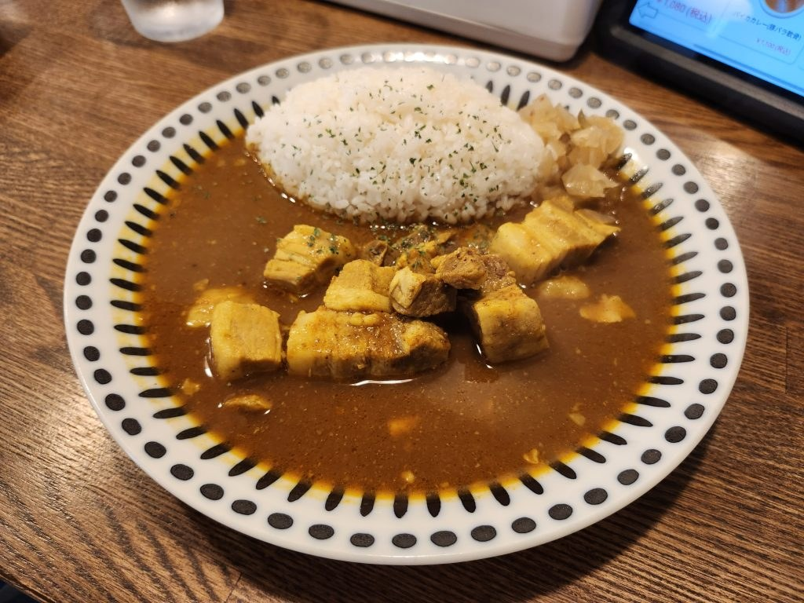
| 営業時間 | 11:00〜21:00 |
|---|---|
| 定休日 | 不明（シャミネ鳥取の営業日に準じる） |
| 住所 | 鳥取県鳥取市東品治町111-1 シャミネ鳥取 えきなかキッチン |
| 予約 | 不可 — ☎ 0857-30-1533 ／ 公式サイト |
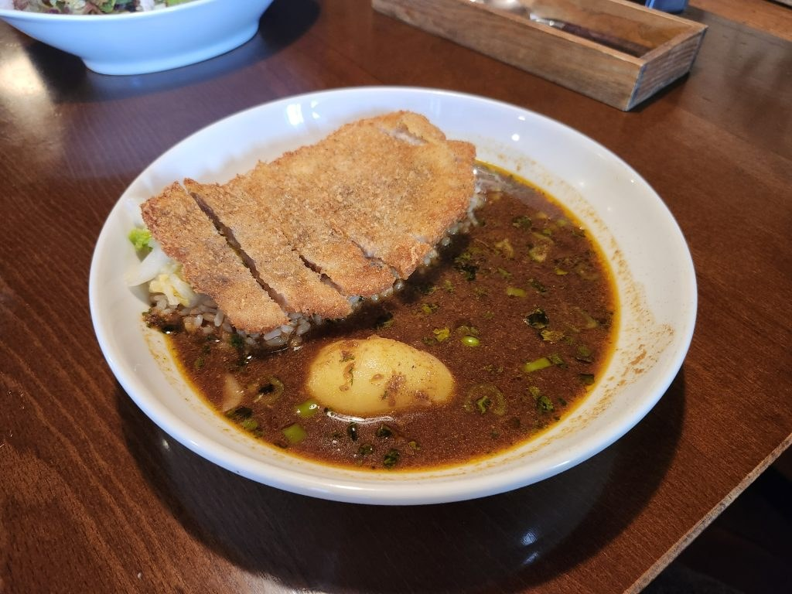
| 営業時間 | 11:30〜15:00, 17:00〜21:00 |
|---|---|
| 定休日 | 火曜 |
| 住所 | 鳥取県鳥取市今町1丁目162 |
| 予約 | 不明 — ☎ 080-1902-4210 ／ 公式サイト |
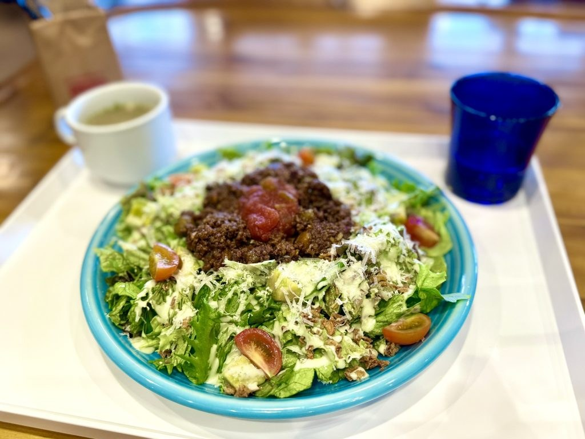
| 営業時間 | 11:30〜15:00, 18:00〜22:00 |
|---|---|
| 定休日 | 火曜 |
| 住所 | 鳥取県鳥取市元町123 |
| 予約 | 不明 — ☎ 0857-30-2270 ／ 公式サイト |
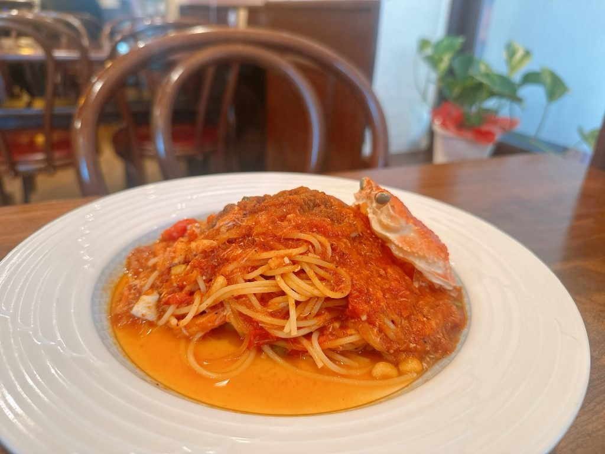
| 営業時間 | 11:30〜14:00（L.O.13:50）, 18:00〜22:00（L.O.21:00／日・祝は21:00） |
|---|---|
| 定休日 | 第1・3・5日曜、第2・4月曜（祝日の場合は翌日） |
| 住所 | 鳥取県鳥取市弥生町308-2 |
| 予約 | 可 — ☎ 0857-27-4736 ／ 公式サイト |
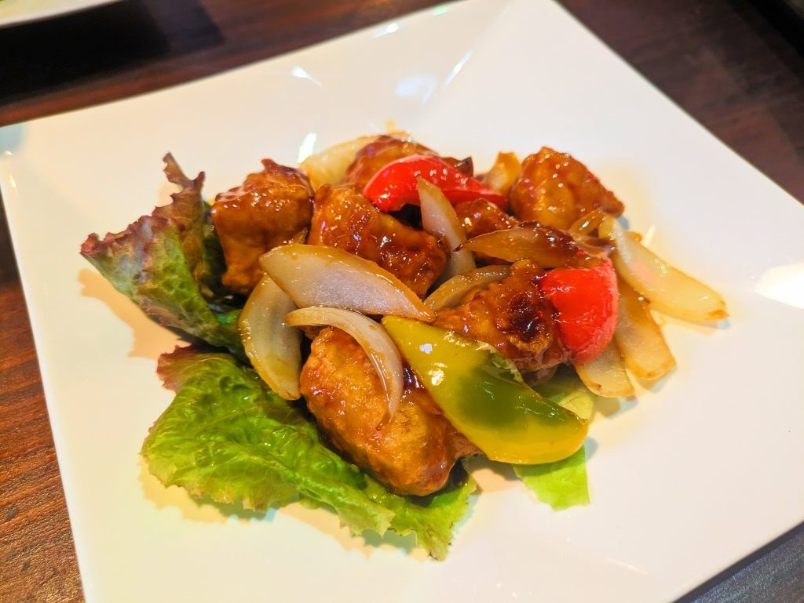
| 営業時間 | 11:15〜14:00（平日）／11:30〜14:00（土日祝）, 17:30〜21:00（火〜金）／17:00〜21:00（土日祝） |
|---|---|
| 定休日 | 不定休（Instagramで要確認） |
| 住所 | 鳥取県鳥取市湖山町東4丁目32 |
| 予約 | 不明 — ☎ 0857-32-1177 ／ 公式サイト |
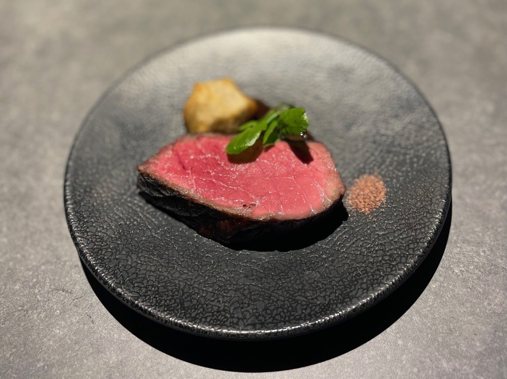
| 営業時間 | 11:00〜23:00（月〜日・祝日・祝前日。ホットペッパーグルメ掲載。ただし同欄の更新日は2020年10月21日）。ランチは平日の火〜金が洋食ランチ、土日祝は通常のランチ |
|---|---|
| 定休日 | なし（ホットペッパーグルメ 2020年10月21日更新時点の記載） |
| 住所 | 鳥取県鳥取市末広温泉町152番地 |
| 予約 | 推奨 — ☎ 0857-51-0855 |
| 営業時間 | 不明 |
|---|---|
| 定休日 | 不明 |
| 住所 | 鳥取県鳥取市末広温泉町129 |
| 予約 | 不要 — ☎ 0857-22-2874 |
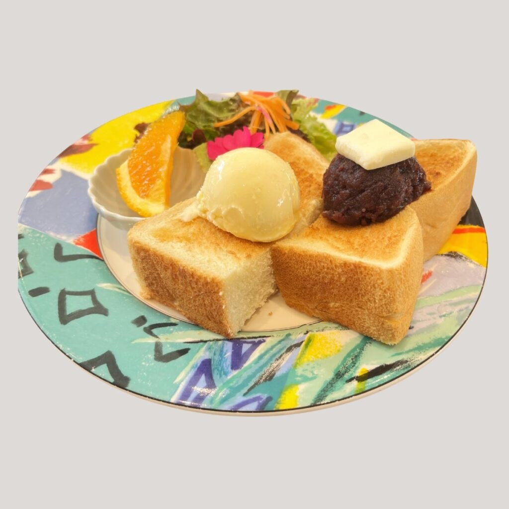
| 営業時間 | 平日8:00〜16:00（L.O.15:30）、土日祝8:00〜18:00（L.O.17:30）※モーニングは10:30まで |
|---|---|
| 定休日 | 火曜 |
| 住所 | 鳥取県鳥取市栄町706番地 |
| 予約 | 不要 — ☎ 0857-27-4649 ／ 公式サイト |
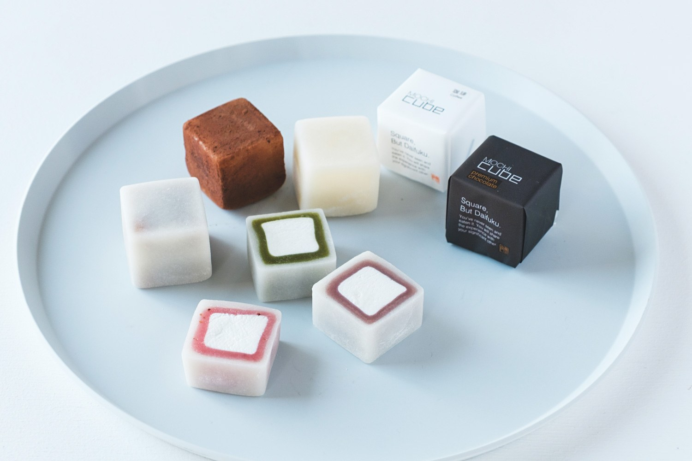
| 営業時間 | 9:00〜18:30 |
|---|---|
| 定休日 | 日曜・祝日 |
| 住所 | 鳥取県鳥取市二階町3丁目121 |
| 予約 | 不要 — ☎ 0857-22-3745 ／ 公式サイト |
| 営業時間 | 8:30〜19:00（日曜・祝日は〜17:30） |
|---|---|
| 定休日 | 無休 |
| 住所 | 鳥取県鳥取市片原2丁目116 |
| 予約 | 不要 — ☎ 0857-23-7021 |
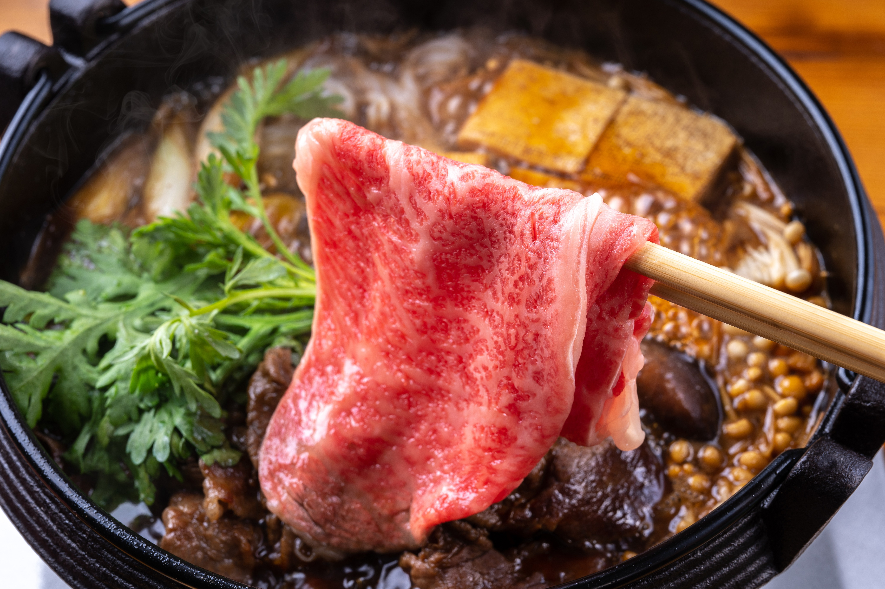
| 営業時間 | 11:00〜21:30（L.O.21:00） |
|---|---|
| 定休日 | 火曜 |
| 住所 | 鳥取県鳥取市栄町606 まるもビル1F |
| 予約 | 可 — ☎ 0857-51-1178 ／ 公式サイト |
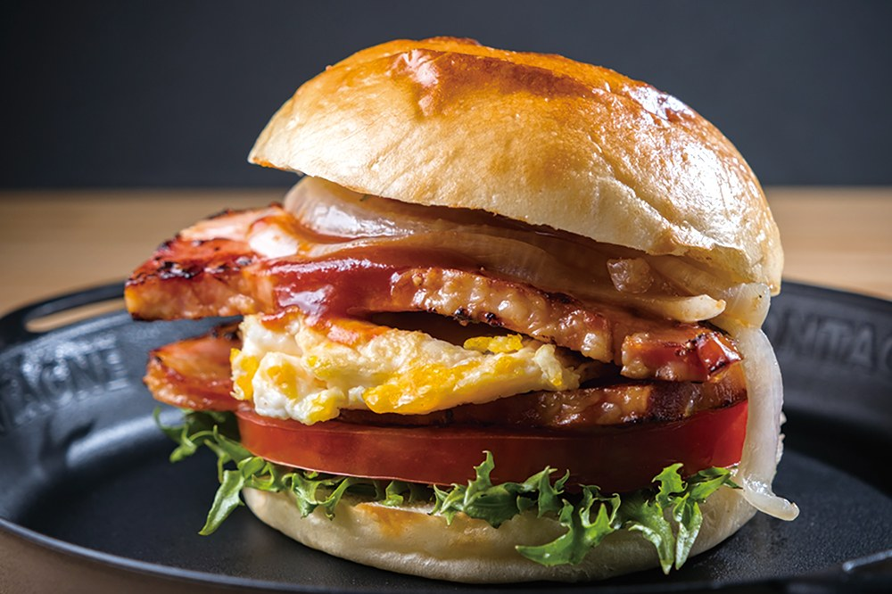
| 営業時間 | 10:00〜17:00（L.O.16:30） |
|---|---|
| 定休日 | 年中無休 |
| 住所 | 鳥取県鳥取市福部町湯山2164 |
| 予約 | 不要 — ☎ 080-8132-3939 ／ 公式サイト |
本ガイドは個人利用目的で作成。掲載情報は2026年10月時点の調査に基づく。写真出典: 各店の公式サイト・公式SNS、および地域情報サイト等の掲載写真（著作権は各サイト・各撮影者に帰属）。引用元は店ごとにカード内へ明記。